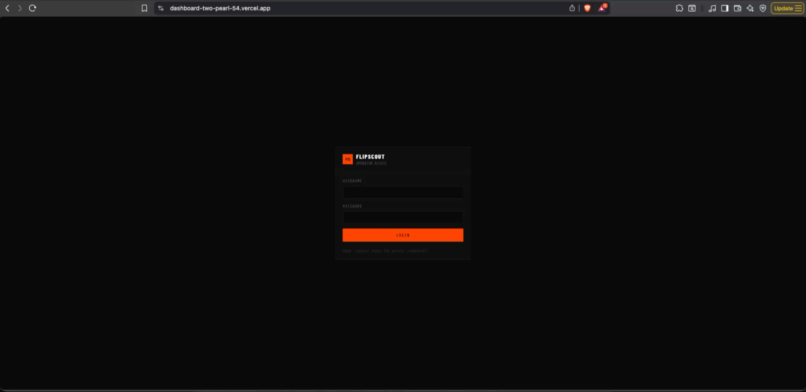
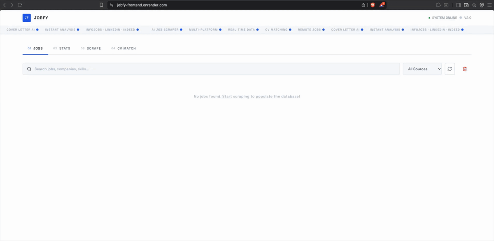

QA Engineer & Frontend Developer
Test automation with Playwright and Cypress. Modern interfaces with React and TypeScript. 2+ years delivering quality software in production.
A selection of personal and professional projects showcasing my technical skills.

Japanese arbitrage profit calculator. Monitors Yahoo Auctions JP and Mercari JP for underpriced tech, Pokémon cards and fashion — calculates real EUR margins including EMS shipping and platform fees — and snipers Wallapop/Vinted for matching resale listings.

Full-stack job scraper dashboard. TypeScript monorepo with React 19, Node.js, PostgreSQL and Prisma. Async multi-source scraping, real-time status polling, stats dashboard and CI/CD pipeline with GitHub Actions.
Standalone QA automation suite for JobFy v2. 204 tests across Playwright E2E (4 browsers), Jest unit tests and Supertest integration tests. Covers API contracts, UI flows, responsive design and error handling.
QA Engineer and Frontend Developer passionate about software quality and well-crafted interfaces.
I'm a QA Engineer and Frontend Developer with 2+ years of experience delivering quality software in production.
Specialised in test automation with Playwright and Cypress, and building modern interfaces with React and TypeScript.
Available in Valencia, Madrid or remote — open to international opportunities.
Have a project in mind or want to collaborate? Feel free to reach out.
Send email